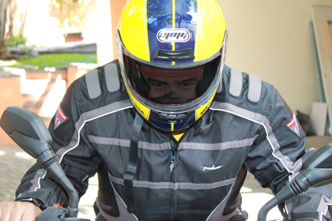
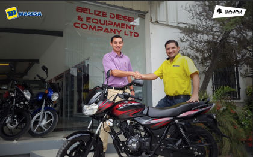
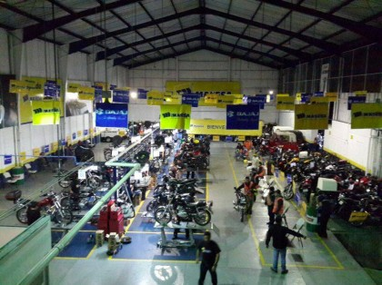
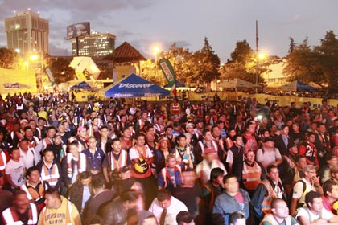
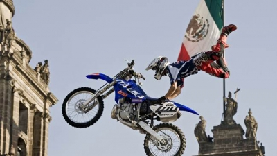
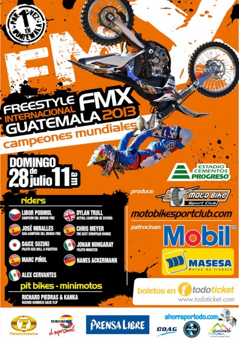

Masesa invita a respetar las normas de transito y seguridad vial

Urge respetar leyes de tránsito En el Día Mundial de la Seguridad Vial queremos manifestar preocupación por la falta de educación, y respeto de las leyes de tránsito, lo cual hace que como empresa socialmente responsable hagamos un llamado no solo a los a los pilotos de motos, sino también de automóviles.

Welcome to our new dealer in Belize
Bajaj motorcycles, manufactured in India, achieve to maintain world standards for Quality, Durability & Customer Service. Its for this reasons that the Brand has attained leadership position for the last 8 consecutive years around the five countries of the Central America and now in Belize.

Motocicletas de peregrinos de la caravana del zorro 2014 reciben mantenimientos
Para garantizar el mejor funcionamiento de las motocicletas de los participantes de la Caravana del Zorro, recibieron mantenimiento para evitar desperfectos mecánicos durante el trayecto entre Guatemala y Esquipulas, Chiquimula, informa el gerente de Mercadeo regional de Masesa, Nicolás Díaz Jimeno.

Celebración día del mensajero 2013
Durante ocho años consecutivos Masesa ha intercambiado más de 10 mil casos para apoyar la seguridad de los hombres y mujeres que cada día circulan las calles y avenidas como parte del trabajo de motorista.

Nungaray y Cervantes llegan a “FMX – GUATEMALA 2013” para dar lo mejor sobre las rampas
Johan Nungaray y Alex Cervantes, pilotos mejicanos de FMX que estarán en Guatemala el próximo 28 de julio, ya están listos para dar lo mejor de sí sobre las rampas en el país Guatelmateco. Ambos han estado entrenando de manera intensiva para estar preparados y dar su mayor potencial en Guatemala.

Freestyle Internacional Motocross xtreme llega por primera vez a Guatemala
El mejor espectáculo del mundo sobre dos ruedas y los mejores pilotos del planeta, entre ellos Campeones del Mundo, desembarcan por primera vez en Guatemala, concretamente en la ciudad de Guatemala City con la celebración de un evento extremo. Una cita deportiva que se desarrollará en el Estadio Cementos Progreso (La Pedrera) de Guatemala City y con el mayor despliegue de medios jamás visto para hacer vibrar a todos los guatemaltecos.
Motocicletas de peregrinos de la caravana del zorro 2014 reciben mantenimientos
Para garantizar el mejor funcionamiento de las motocicletas de los participantes de la Caravana del Zorro, recibieron mantenimiento para evitar desperfectos mecánicos durante el trayecto entre Guatemala y Esquipulas, Chiquimula, informa el gerente de Mercadeo regional de Masesa, Nicolás Díaz Jimeno.
Celebración día del mensajero 2013
Durante ocho años consecutivos Masesa ha intercambiado más de 10 mil casos para apoyar la seguridad de los hombres y mujeres que cada día circulan las calles y avenidas como parte del trabajo de motorista.